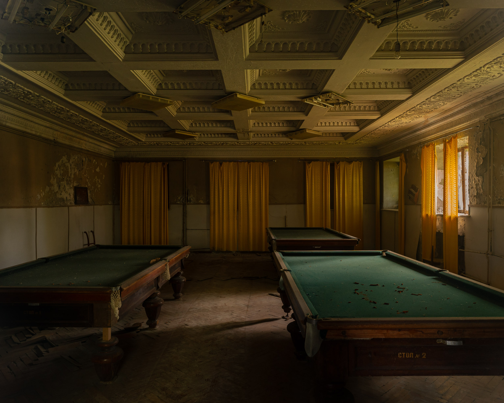
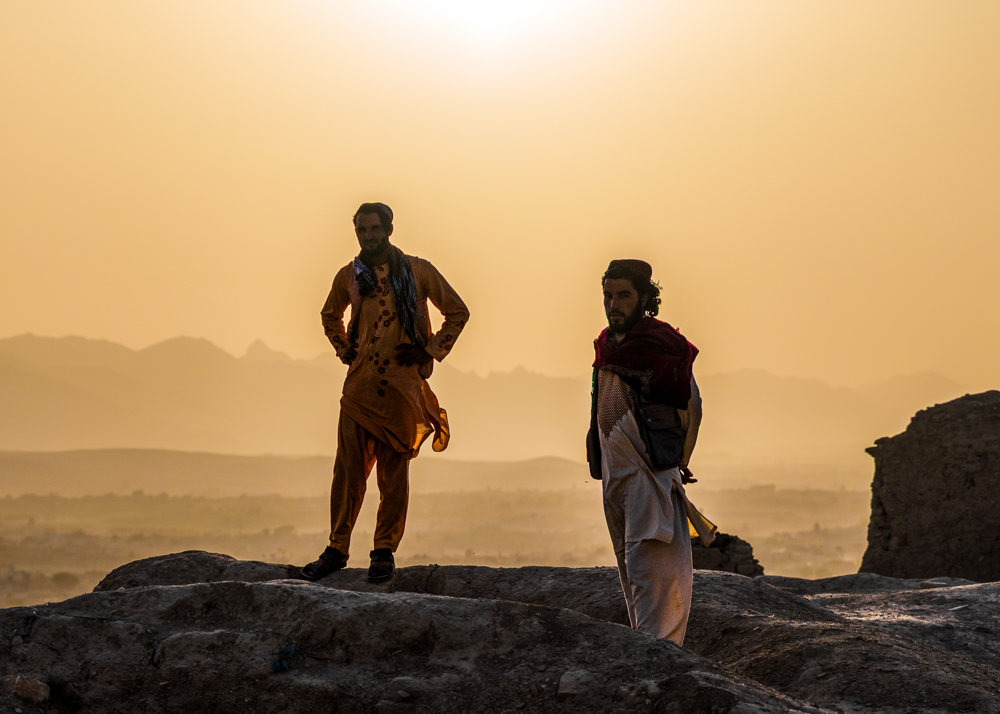
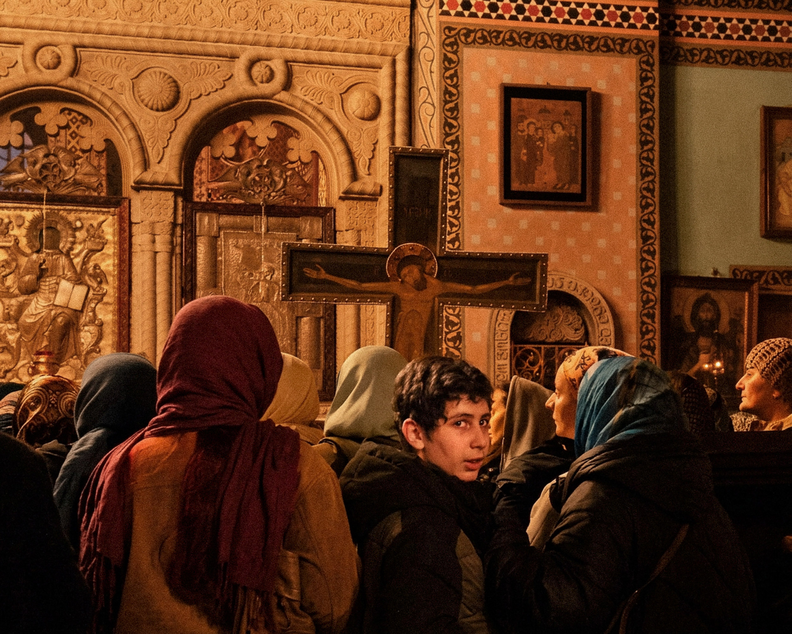

The Last Rooms
Tskaltubo, Georgia — abandoned sanatorium rooms that still bear traces of past lives

Afghanistan
From the streets of Ghazni and Kabul to the Blue Mosque of Mazar-e-Sharif and the ancient valleys of Bamyan, these photographs portray the resilience, traditions, and everyday lives of the Afghan people.

Morning of the Patriarch
Tbilisi, Georgia — moments of prayer and reflection following the death of Patriarch Ilia

Life in the Pamirs
Bulunkul and the Wakhan Valley, Pamir Mountains, Tajikistan
Daily life in one of the world's highest inhabited regions.
The Future
Tbilisi, Georgia — portraits of young people expressing identity, individuality and change

Portfolio
Click on an image to view full screen


{kind=link}
{kind=link}
{kind=link}
I am a documentary and travel photographer focused on raw, human moments.
My work explores everyday life in places that are often misunderstood, restricted or rarely seen. I photograph quietly and without interference, aiming to capture reality as it unfolds.
Through people, light and atmosphere, I look for images that reveal both dignity and complexity.
Based in the Netherlands, working internationally.
Contact
For editorial, documentary, print or collaboration enquiries, feel free to get in touch.